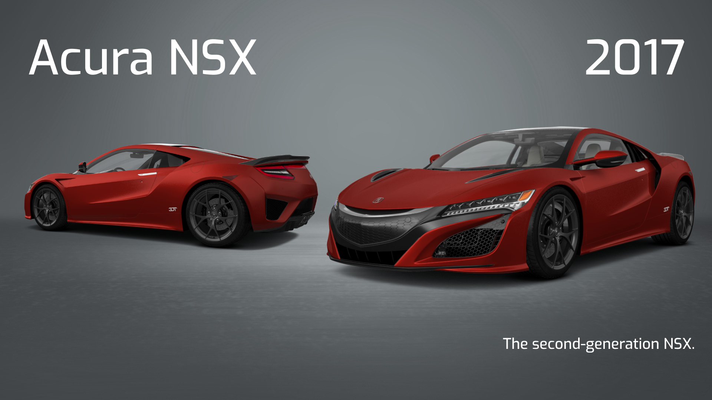
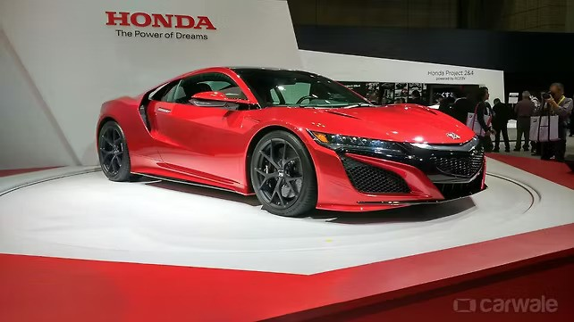
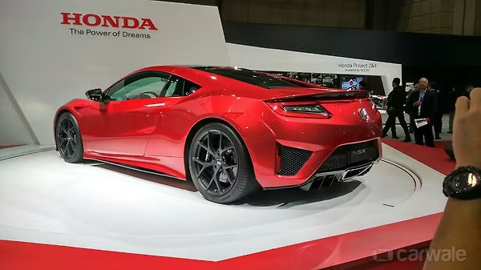
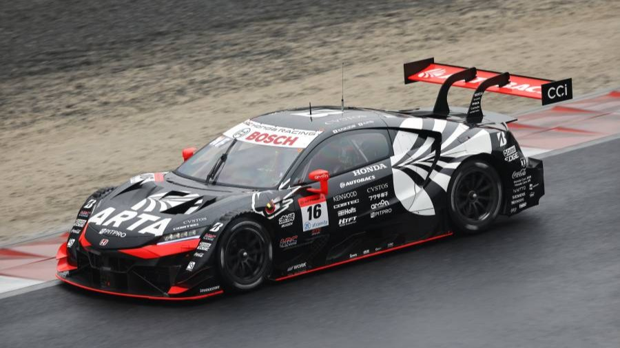
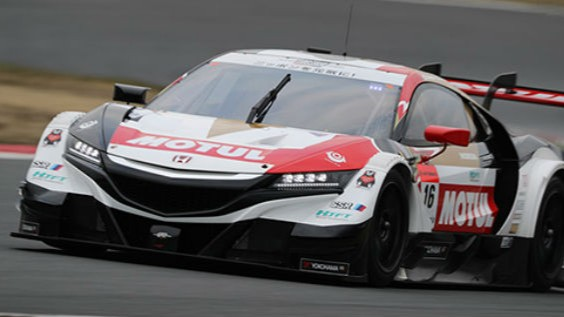
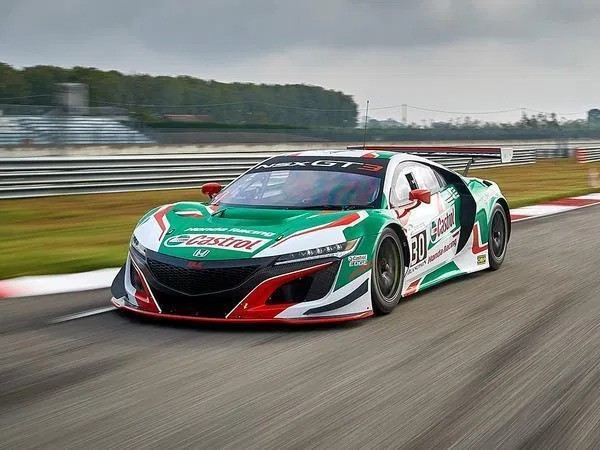
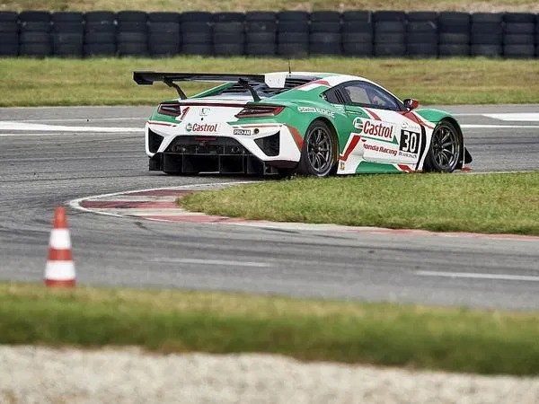

The second-generation Honda NSX (marketed as the Acura NSX in North America, China and Kuwait)[a] is a two-seater sports car which was developed and manufactured by Honda. It is a two-door coupe with a rear mid-engine, all-wheel-drive layout and a gasoline-electric hybrid drivetrain. The car was developed in collaboration between the company's divisions in Japan and the United States, and all models were hand-built at a dedicated factory in Ohio. Production began in 2016 and ended in 2022 with the Type S variant. It succeeds the first-generation NSX that was produced in Japan from 1990 to 2005. The development team aimed to make the car suit a wide range of driving conditions, from high-performance driving on winding roads and racetracks to more relaxed street driving.
The car is powered by a bespoke 3.5-liter twin-turbocharged V6 engine producing 373 kW (507 PS; 500 hp), supplemented by three electric motors to bring the total power output to 427 kW (581 PS; 573 hp). Two of these electric motors are mounted on the front wheels and the remaining one powers the rear wheels, allowing torque vectoring for improved cornering performance, torque fill for improved acceleration, and instant torque for improved response. The NC1 NSX was among the first sports cars and the first car in its performance segment to use hybrid technology. The car received an updated version in 2019, with minor changes to the chassis and styling. For its final model year in 2022, a limited-production Type S model was introduced, with an increase in power to 449 kW (610 PS; 602 hp), various tweaks to the chassis and transmission, and aerodynamic and styling upgrades. A total of 2,908 cars were produced, including 350 Type S models..
The second-generation NSX has been used in motorsports, with a GT500 class Super GT model competing between 2014 and 2023 and a production-based GT3 racing version debuting in 2017. It also won multiple awards, including 2017 Performance Car of the Year by Road & Track magazine.
In July 2005, Honda's North American luxury brand Acura announced that a successor to the first-generation NSX was in development, with the original being discontinued at the end of the year.Over two years later in December 2007, Honda America's CEO, Tetsuo Iwamura, confirmed to the automotive press that the new sports car would be powered by a V10 engine and make its debut to the market by 2010. Potential styling of the car was previewed by the Acura ASCC (Advanced Sports Car Concept) introduced at the 2007 North American International Auto Show. Prototypes of the vehicle were seen testing on the Nürburgring in June 2008, with Honda's CEO Takeo Fukui challenging the developers to make the car faster than the Nissan GT-R around the track. On December 17, 2008, Fukui announced during a speech about Honda's revised financial forecasts that, due to poor economic conditions, all plans for a next-generation of the NSX had been cancelled; the company's profits fell by 81% due to the 2008 financial crisis.
Although the road car project was cancelled, the company used the vehicle as a base model for a racing car named Honda HSV-010 GT, which they entered in the Japanese Super GT Series from 2010 to 2013. Honda was able to enter the HSV-010 GT on the basis that the base model was "production-ready", even though most cars in the series had to be based on production cars. As mandated by the class regulations, that car had a front-engined, rear-wheel drive layout, powered by a 3.4-liter V8, rated over 500 hp (373 kW).
In late 2010 and early 2011, reports from various automotive magazines began to emerge that Honda was again planning to make a new sports car to be a successor to the original NSX, and that it could use electric motors in addition to a petrol engine. Honda CEO Takanobu Ito confirmed in September 2011 that the company had begun development of a new sports car, and by the end of the year in December, Acura announced that they would unveil the next generation of the NSX in concept form at the 2012 North American International Auto Show. On January 9, 2012, Acura unveiled the mid-engined 2012 NSX Concept to the general public, confirming that its SH-AWD system incorporates two electric motors on the front wheels and one on the rear wheels to augment the combustion engine, thus forming a hybrid setup. This setup was chosen to take advantage of the torque vectoring capabilities, instant torque, added power and improved efficiency the electric motors would bring. The concept of a hybrid sports car was new at the time, with other such cars like the Porsche 918, LaFerrari, McLaren P1 and BMW i8 still yet to be released. At the following year's show, a more refined 2013 NSX Concept was revealed with styling closer to the production car.
The new NSX would be developed in collaboration between Honda's divisions in Japan and the United States. Initial planning was done in Japan, before a joint Japanese-American development team was established. Development of the engine, hybrid system and transmission would be done at Honda's Automobile R&D Center facility in Tochigi, Japan, while development of the rest of the vehicle was concentrated at the Honda R&D Americas development center in Ohio, United States. Ted Klaus, a Honda engineer since 1990 and future president of Honda Performance Development, was chosen as the global large project leader of the project, while Ryoji Tsukamoto was the large project leader in Japan.[29] Many of the engineers who worked on the car had previously worked on Honda's various motorsport programs.
On December 27, 2014, Honda announced that the second-generation of the NSX flagship sports car would debut at the 2015 North American International Auto Show, where the car was revealed on January 12, 2015. Honda began taking orders for the NSX in summer 2015, and deliveries in late 2015. In December 2015, the North American pricing was announced with a starting price of US$156,000.
The first production vehicle with VIN #001 was auctioned off by Barrett Jackson on January 29, 2016.[50] NASCAR team owner Rick Hendrick won the auction with a bid for US$1.2 million. The entire proceeds from the auction were donated to the charities Pediatric Brain Tumor Foundation and Camp Southern Ground. The first NSX rolled off the production line in Ohio on May 24, 2016.


In August 2018, Honda announced an overall improvements for the 2019 model year. The improvements included larger front and rear stabilizer bars, which increased front stiffness by 26 percent and rear stiffness by 19 percent, as well as 21 percent stiffer rear toe link bushings. New specially developed Continental tires and optional Pirelli P Zero Trofeo R tires were also included. These led to software optimizations to the Sport Hybrid SH-AWD system, active magnetorheological dampers, electric power steering and VSA settings. According to Honda, the car is 1.9 seconds faster than the NC1 models around the Suzuka Circuit.[86] Visually, the car's previously silver front grille garnish is now painted in the same color as the body. Additionally, a new Thermal Orange Pearl body color became available for 2019, followed by Indy Yellow Pearl for 2020 and Long Beach Blue Pearl for 2021.
On 3 August 2021, Honda announced they would produce an improved, limited-production NSX Type S for 2022 to mark the car's final year of production. The NSX Type S was limited to 350 units worldwide, with 300 of these units available for the U.S. market, 30 for Japan and 15 for Canada. The Type S was the only version of the NSX that will be produced during 2022. The moniker was last used in the NSX on the 1997 NSX Type S and Type S-Zero models that were exclusive for the Japanese domestic market meaning that the 2022 version was the first NSX Type S to be sold out of Japan. The car was unveiled on 12 August 2021 at the Monterey Car Week in the United States, and on 30 August in Japan.
The NSX Type S features several enhancements to the NSX's powertrain, providing a combined maximum power output of 602 hp (610 PS; 449 kW) and 492 lb⋅ft (667 N⋅m) of torque.[93][94] Enhancements to the internal combustion engine include new turbochargers from the NSX GT3 Evo race car that increase peak boost pressure by 5.6 percent from 15.2 psi (1.05 bar) to 16.1 psi (1.11 bar), new fuel injectors which increase flow rate by 25 percent, and new intercoolers that can dissipate an additional 15 percent more heat than previously. As a result of these upgrades, the internal combustion engine now generates a maximum power output of 522 hp (529 PS; 389 kW) at 6,500–6,850 rpm and 443 lb⋅ft (601 N⋅m) of torque at 2,300–6,000 rpm. The gear ratio of the Twin Motor Unit powering the front wheels was lowered by 20 percent to improve torque off the line and give the car a quicker launch, while the car's usable battery capacity and battery output have been increased by 20 and 10 percent, respectively, as a result of more efficient usage of the car's Intelligent Power Unit. Because of the improvements in battery capacity and output, the car's electric motors have been retuned to offer better performance and a higher electric-only range. The car's 9-speed dual-clutch transmission (DCT) also features improvements. New programming for Sport and Sport+ modes resulted in 50 percent faster upshifts, while the allowable downshift speed in Track mode was raised by 1,500 rpm to allow earlier downshifts. A new "Rapid Downshift Mode" was introduced, allowing the driver to shift to the lowest possible gear according to the car's speed by holding the downshift paddle for 0.6 seconds in Sport, Sport+ and Track modes. In fully automatic mode, the transmission downshifts earlier in Sport+ and Track modes.
The Type S features several new design elements to improve downforce and cooling through enhanced aerodynamics. These include a new nose design and a large carbon-fiber rear diffuser based on the one used on the NSX GT3 Evo. The car also has new forged split-5 spoke wheels, increasing front track by 0.4 in (10 mm) and rear track by 0.8 in (20 mm), and new semi-slick Pirelli P-Zero tires developed exclusively for the NSX Type S, which have contributed to the car's lateral grip increasing by six percent. Honda also optimized the car's chassis, suspension and response, re-tuned its four drive modes, and refined its engine note. Also, black Honda and Acura badging offered exclusively for the NSX Type S just like other Type S models. As an optional feature, a "Lightweight Package" was introduced, reducing 26 kg (57 lb) from the car's curb weight with carbon ceramic brakes, carbon fiber engine cover and carbon fiber interior parts. Also, a new exclusive body paint color, named "Gotham Gray Matte" on North American models and "Carbon Matte Gray Metallic" on Japanese models, was offered, which is limited for 70 vehicles.
On 14 August 2021, the first NSX Type S – VIN #001 out of 350 – was auctioned to Rick Hendrick (same buyer of the first production NSX, which was auctioned back in 2016) for US$1.1 million at Mecum's Daytime Auction, which was held during the Monterey Car Week. All proceeds were donated to charitable organizations, including the Center of Science and Industry (COSI). All 300 Type S models in the United States were reserved with deposits within 24 hours of the car's launch, with a waiting list that includes more than 100 people. Applications for purchase in Japan began on 2 September 2021, with Japanese deliveries beginning in July 2022. Production of the NSX Type S began in January 2022. North American deliveries began in February 2022. Also, Acura Canada and Make-A-Wish Foundation held an online private auction for the first Type S out of 15 reserved Canadian Type S vehicles. The car led to a bid of US$306,364.90, won by Luc Giard and Geneviève Hardy. This was the largest, one-time, single donation the Make-A-Wish ever received. All of the proceeds were led to help children with critical illnesses.
Italdesign worked with Honda to create a redesigned version of the second-generation NSX as a tribute to the original NSX. Italdesign said they would only be converting existing customer cars, rather than producing the model themselves, and the conversion was reportedly limited to right-hand-drive examples of the NSX. The NSX by Italdesign made its first exhibition debut at the 2026 Tokyo Auto Salon. There are several inspirations from the first generation model, including the air intake on the roof from the NSX Type R, the distinctive shape of the rear spoiler, and the square-shaped taillight. Production is planned between 10 to 15 units.[108] The tribute doesn't feature any changes to the drivetrain or chassis.


The NSX Concept-GT, a race car based on the NSX concept, was unveiled in 2013 to race in the GT500 category of the Super GT Series from 2014. During the 2014 season, the NSX Concept-GT received its first pole and victory at Fuji Speedway in August, with the best-placed Honda driver fourth in the championship. In 2015, the car won at Sportsland Sugo and finished third in the championship. The car featured a hybrid system in 2014 and 2015, but it was abandoned for the 2016 season, with hybrid systems banned from GT500 in 2017.[138] The 2016 season saw the car score a pole position in Suzuka and three podiums.


At the 2016 New York International Auto Show, Honda announced the GT3 version of the NSX, to begin competition in 2017. During its first season of racing in 2017, the NSX GT3 scored its first race victory in the IMSA SportsCar Championship GTD class at Belle Isle, followed by another win at the following round of the championship, the 6 Hours of Watkins Glen. It also won the Utah round of the Pirelli World Challenge. For the following year in 2018, the car finished second in the IMSA GTD championship with two wins. It made its debut in the Japanese Super GT Series, scoring a podium in Autopolis. The car also made its debut at the 24 Hours of Spa, finishing the 24-hour race seventh in the Pro-Am class.

